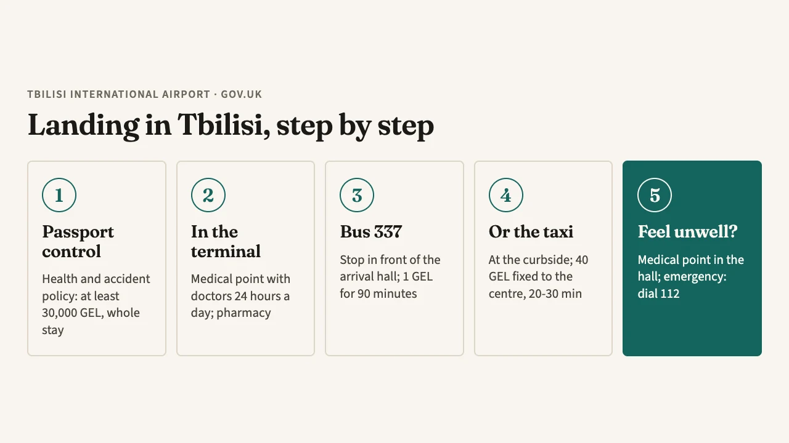
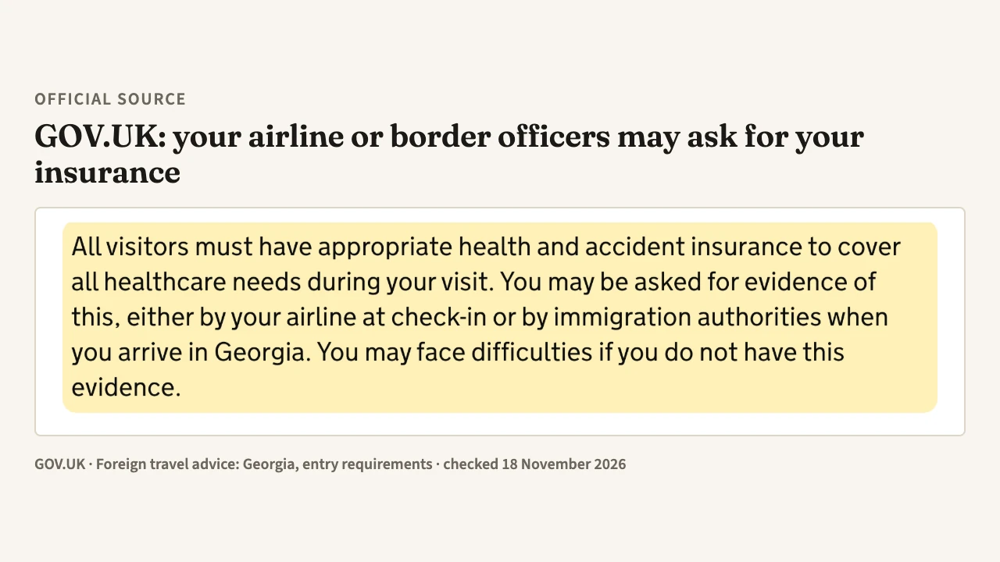
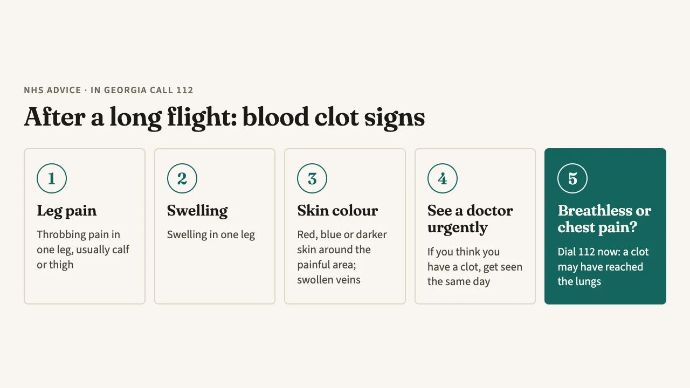

- Bus to the centre
- route 337
- Bus fare
- 1 GEL for 90 min
- Taxi to the centre
- 40 GEL fixed
- By taxi
- 20–30 min
This page is about Georgia the country, not the US state, and is part of the Georgia Travel Guide. Checked on 18 November 2026.
Tbilisi Airport arrival: what is in the hall
The terminal covers the basics for your first hour in Georgia: a medical point with doctors, a pharmacy, banks and currency exchange, Wi-Fi and an information desk. All of them are listed on the services page of the airport's official site.
Medical point. The airport's services page says its "Medical point is located in the arrival hall of terminal"; its FAQ places it "in the middle of the Arrivals & Departures Hall", where "qualified doctors are ready to provide medical assistance 24 hours a day". Its phone, as listed there: +995 32 310 467. If you feel faint, hurt yourself or something went wrong on the plane, this is the nearest help, and the information desk can point you to it. If someone cannot breathe, has chest pain or collapses, dial 112 straight away.
GPC Pharmacy. In the airport's words, "The airport pharmacy has an extensive selection of prescription and non-prescription medicines in stock." The page does not say where in the terminal it is or when it opens. Our tip: do not count on finding your usual brand on arrival, and keep a few days' supply of any regular medicine in your hand luggage.
Banks and currency exchange. The airport points to "Banks and Currency Exchange Offices" available at Tbilisi Airport. Our tip: before you fly, check that your bank card works abroad, because the bus takes cards; changing a small amount of cash in the hall gives you a backup.
Wi-Fi. The airport says Wi-Fi is "available throughout the terminal". Use it to message your hotel, download your policy if it only sits in your email, and save the address you are heading to.
Information Desk and Lost Luggage Office. Both appear on the airport's list. If your bag has not come off the belt, go to the Lost Luggage Office before you leave the hall, with your baggage tag and boarding pass. That is our advice; the airport's page does not describe the procedure.


Passport control and the 2026 insurance rule
Every visitor needs a policy, so have it ready before you queue. UK government advice for Georgia on GOV.UK puts it this way: "All visitors must have appropriate health and accident insurance to cover all healthcare needs during your visit. You may be asked for evidence of this, either by your airline at check-in or by immigration authorities when you arrive in Georgia. You may face difficulties if you do not have this evidence."
GOV.UK does not spell out what those difficulties are, and we do not guess. The practical point is simple: show the policy at the desk without having to search for it.
What the policy must cover. The policy must be for health and accident, and the same page sets three more conditions:
- Amount: at least 30,000 GEL. In GOV.UK's words, "no less than 30 000 Georgian Lari".
- Who issues it: the policy "may be issued by either a Georgian or a foreign insurance company".
- Dates: it "needs to cover the full period of your stay in Georgia, including both arrival and departure dates".
Our tip on the dates: if you land just after midnight, the policy must already be valid on that day, and your departure day must fall inside the period too. Check this at home, not at the passport desk.
For the full list of what the policy must state, GOV.UK points to Georgia's official entry information. 100doc.ge, a site that sells these policies, also explains what the policy must include. Our guide's home page has a short summary of the 2026 entry rule.
Our tip: keep it in two forms. Save the policy as a PDF on your phone so it opens offline, and carry a printed copy in your hand luggage. After a long flight a phone can run flat, and a file buried in an email or an app with a login is slow to open in a queue.
Medicines in your bag. If you travel with prescription medicines, check the rules before you pack: our guide on bringing medication to Georgia covers them. Our tip: carry them in your hand luggage, so a delayed bag does not leave you without them.

Tbilisi Airport to the city: bus 337 and taxi
There are two ways in, both described on the airport's site: municipal bus 337 for 1 GEL, or a taxi from the kerb outside arrivals at a fixed fare. The bus is the cheapest option; the taxi takes you to the door and runs at any hour.
Where to catch the bus. The airport says: "The municipal bus stop is located in front of the Arrival hall." The route is "# 337 - Airport - Tbilisi city center - Airport", so the same bus brings you back for your flight home.
Bus fare and payment. One fare of 1 GEL covers 90 minutes of travel; the airport writes it as "1 GEL - 90 minutes". Payment "is possible with a 'Metro money' card, as well as with different bank cards". A note on the same page says that if you pay by mobile app or cash, on buses that take cash, the 90-minute package does not apply. Our tip: have a bank card ready.
When the bus runs. The airport's page lists "Timetable : 06:59 | 22:59" without saying from which end of the route, so check the airport's bus page on the day you fly. For a late-night or early-morning landing, plan on a taxi.
Who the bus suits. In our view, it works well if you travel light and are staying in the centre. With heavy bags, small children or after a night flight, a taxi is easier.
Taxi: where and when. In the airport's words: "Taxi service at Tbilisi International Airport is available outside the terminal, just at the curbside of the Arrival Hall, and provides 24-hour service to passengers."
Taxi: how long and how much. "The journey time to the city center takes 20-30 minutes, depending on traffic." The fare is fixed: 40 GEL to the city centre and 50 GEL to suburban areas, according to the airport's taxi page on 18 November 2026.
Our tips for the taxi. Before you get in, show the driver your address and ask whether it counts as the city centre or a suburb, so you know whether the fare is 40 or 50 GEL. Ask how you can pay before the car moves off.

Feeling unwell after the flight
For anything urgent, dial 112: that is the emergency number in Georgia, not the British 999 you may see in UK health advice. For problems that are not life-threatening while you are still at the airport, the medical point in the arrivals hall is the closest help.
A blood clot in the leg. One condition worth knowing about after a flight is deep vein thrombosis, or DVT. The NHS lists these signs:
- "throbbing pain in 1 leg (rarely both legs), usually in the calf or thigh";
- "swelling in 1 leg (rarely both legs)";
- "red, blue or darkened skin around the painful area";
- "swollen veins".
When to dial 112. The NHS says to get emergency help if you have symptoms of DVT, "such as pain and swelling", and you "feel short of breath" or "have chest pain". Its page gives the British number; in Georgia, dial 112 at once. The NHS warns that "A pulmonary embolism can be life-threatening", so do not wait to see whether it passes.
Leg signs without breathing problems. Do not ignore them. The NHS advises getting an urgent appointment if you think you have a clot; in Georgia, that means seeing a doctor the same day, at the medical point if you are still in the terminal or at a clinic in the city. If shortness of breath or chest pain starts, dial 112.
On the next long flight. The NHS lists a journey of "more than 4 hours" by plane among the things that raise the risk, and suggests "wearing loose clothing", "drinking plenty of water", "avoiding alcohol" and "walking around when possible".

Calling an ambulance. UK government health advice for Georgia says: "Dial 112 and ask for an ambulance." Our guide explains how to call an ambulance on 112 and what to say. Our tip: start with where you are, for example "Tbilisi International Airport, arrivals hall", then what happened.
What care may cost. GOV.UK also warns: "Medical facilities in Tbilisi are available but can be expensive." That is one more reason to land with a valid policy that covers every day of your stay.
Arriving at Kutaisi or Batumi instead
The entry rule and the emergency number stay the same wherever you land: GOV.UK says your policy may be checked "when you arrive in Georgia", and 112 works across the country. What changes is the way into town.
Batumi. The airport's official site describes "Aleksandre Kartveli Batumi International Airport (IATA: BUS; ICAO: UGSB)" as "just 2 km from Batumi city center" and says "Regular municipal buses, licensed taxis, and private transfers operate between the airport and the city center".
Kutaisi. The menu of the Kutaisi International Airport site lists four ways to travel: shuttle bus, taxi, bus and railway. It gives no details there, so check times and fares before you fly, especially for a late arrival.
Frequently asked questions
How far is Tbilisi Airport from the city?
How do I get from the airport at night?
Will they check my travel insurance at the border?
They may, and every visitor needs one. GOV.UK says all visitors must have health and accident insurance, and evidence may be asked for by your airline at check-in or by immigration authorities on arrival. The policy must be for at least 30,000 GEL and cover your whole stay, including the arrival and departure dates. Keep it on your phone and on paper.
Is there a doctor at Tbilisi Airport?
Is there a pharmacy at the airport?
What are the signs of a blood clot after a flight?
Sources
- Tbilisi International Airport: facilities and services (medical point, pharmacy, banks, Wi-Fi, information desk, lost luggage) ↑
- Tbilisi International Airport: to and from the airport ↑
- Tbilisi International Airport: bus 337 ↑
- Tbilisi International Airport: taxi ↑
- GOV.UK travel advice for Georgia: entry requirements ↑
- GOV.UK travel advice for Georgia: health ↑
- NHS: deep vein thrombosis (DVT) ↑
- Batumi International Airport: contact information ↑
- Kutaisi International Airport ↑
- Georgia's official entry information (Ministry of Foreign Affairs consular portal) ↑
This guide is general information, not medical advice: the doctor decides on your care.